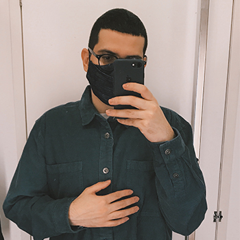

- Home
- >
- Currículo
Currículo
Dados Pessoais

Nome:
Caio Souza
Data de Nascimento:
26/05/1999
Residência:
Agência da TVA, interdimensional
Idiomas:
Português (Nativo)
Inglês (Avançado)
Sobre Mim
Formado em engenharia de computação em 2022 fui recrutado em janeiro de 2023 pela TVA após tomar uma decisão que não era prevista para a sagrada linha do tempo. Inicialmente seria eliminado, mas acabei sendo escolhido para trabalhar como um agente. Atualmente já não sei há quanto tempo estou empresa, mas ao longo de toda minha carreira fui promovido algumas vezes e atualmente sou Gerente Júnior.
Educação
2018-2022
Bacharel em Engenharia de Computação - Universidade Federal de Itajubá (UNIFEI)
2015-2017
Técnico em Informática - Instituto Federal do Sul de Minas (IFSULDEMINAS)
Experiência de Trabalho
Indefinido
Gerente Júnior - Time Variance Authority (TVA)
Indefinido
Agente - Time Variance Authority (TVA)
Experiência de Projetos
2019
Diretor Secretário de Comunicação - ABU Itajubá
2020
Diretor Vice-Presidente - ABU Itajubá
Contato
caiozetula2@gmail.com
(35) 98438-6024
← Voltar ao início